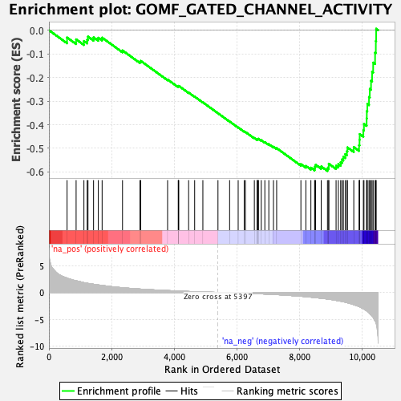
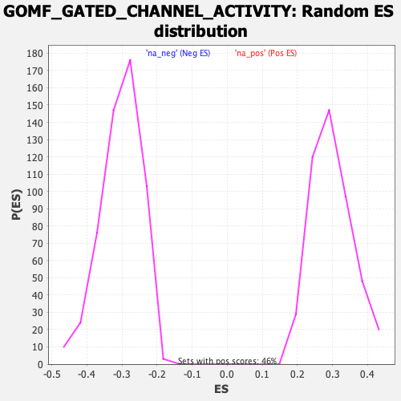

| Dataset | qlf.KOd4vsWTd4_gsea_score |
| Phenotype | NoPhenotypeAvailable |
| Upregulated in class | na_neg |
| GeneSet | GOMF_GATED_CHANNEL_ACTIVITY |
| Enrichment Score (ES) | -0.5956574 |
| Normalized Enrichment Score (NES) | -1.9706546 |
| Nominal p-value | 0.0 |
| FDR q-value | 0.013337442 |
| FWER p-Value | 0.166 |

| SYMBOL | RANK IN GENE LIST | RANK METRIC SCORE | RUNNING ES | CORE ENRICHMENT | |
|---|---|---|---|---|---|
| 1 | VDAC2 | 579 | 2.669 | -0.0310 | No |
| 2 | ANXA6 | 868 | 2.174 | -0.0387 | No |
| 3 | VDAC1 | 1117 | 1.818 | -0.0459 | No |
| 4 | CACNA1S | 1222 | 1.707 | -0.0402 | No |
| 5 | TMEM109 | 1247 | 1.680 | -0.0272 | No |
| 6 | VDAC3 | 1425 | 1.517 | -0.0302 | No |
| 7 | CYBB | 1577 | 1.393 | -0.0320 | No |
| 8 | CLIC4 | 1698 | 1.302 | -0.0315 | No |
| 9 | CLIC3 | 2349 | 0.873 | -0.0858 | No |
| 10 | KCNQ5 | 2906 | 0.625 | -0.1334 | No |
| 11 | KCNK6 | 2930 | 0.619 | -0.1299 | No |
| 12 | P2RX4 | 3788 | 0.346 | -0.2088 | No |
| 13 | TMC4 | 4128 | 0.257 | -0.2389 | No |
| 14 | PIEZO1 | 4134 | 0.256 | -0.2371 | No |
| 15 | CACNA1D | 4145 | 0.253 | -0.2357 | No |
| 16 | TMEM63B | 4459 | 0.178 | -0.2641 | No |
| 17 | ANO10 | 4652 | 0.135 | -0.2812 | No |
| 18 | MCOLN3 | 4914 | 0.087 | -0.3054 | No |
| 19 | ITGAV | 5396 | 0.000 | -0.3515 | No |
| 20 | CLCN5 | 5768 | -0.060 | -0.3865 | No |
| 21 | KCNMB4 | 6041 | -0.104 | -0.4116 | No |
| 22 | KCNMB1 | 6233 | -0.142 | -0.4286 | No |
| 23 | CLCN3 | 6272 | -0.149 | -0.4308 | No |
| 24 | CHRNA2 | 6557 | -0.212 | -0.4561 | No |
| 25 | TTYH2 | 6646 | -0.235 | -0.4624 | No |
| 26 | CATSPER2 | 6652 | -0.236 | -0.4607 | No |
| 27 | ITPR2 | 6679 | -0.245 | -0.4610 | No |
| 28 | KCNIP2 | 6687 | -0.247 | -0.4594 | No |
| 29 | CLCN7 | 6778 | -0.268 | -0.4655 | No |
| 30 | CCDC51 | 6892 | -0.299 | -0.4736 | No |
| 31 | CLCN2 | 7019 | -0.335 | -0.4826 | No |
| 32 | KCNK5 | 7167 | -0.376 | -0.4933 | No |
| 33 | CHRNB1 | 7269 | -0.405 | -0.4992 | No |
| 34 | GRIK5 | 8043 | -0.712 | -0.5668 | No |
| 35 | ANO8 | 8201 | -0.790 | -0.5746 | No |
| 36 | KCNN4 | 8362 | -0.879 | -0.5819 | No |
| 37 | ITPR1 | 8481 | -0.956 | -0.5844 | No |
| 38 | CLIC1 | 8494 | -0.963 | -0.5768 | No |
| 39 | TPCN2 | 8513 | -0.976 | -0.5696 | No |
| 40 | KCNA3 | 8692 | -1.083 | -0.5767 | No |
| 41 | CLCN6 | 8891 | -1.227 | -0.5844 | Yes |
| 42 | KCNB1 | 8931 | -1.258 | -0.5767 | Yes |
| 43 | SCN11A | 8933 | -1.259 | -0.5653 | Yes |
| 44 | TRPM4 | 9166 | -1.476 | -0.5740 | Yes |
| 45 | CACNA1A | 9238 | -1.560 | -0.5665 | Yes |
| 46 | RYR3 | 9312 | -1.632 | -0.5586 | Yes |
| 47 | KCNAB2 | 9354 | -1.678 | -0.5472 | Yes |
| 48 | KCNH2 | 9399 | -1.729 | -0.5356 | Yes |
| 49 | CDK5 | 9458 | -1.811 | -0.5245 | Yes |
| 50 | TTYH3 | 9511 | -1.894 | -0.5122 | Yes |
| 51 | MCOLN1 | 9528 | -1.915 | -0.4962 | Yes |
| 52 | PTK2B | 9731 | -2.282 | -0.4947 | Yes |
| 53 | TPCN1 | 9900 | -2.616 | -0.4869 | Yes |
| 54 | TMC3 | 9914 | -2.659 | -0.4638 | Yes |
| 55 | CNGA1 | 9919 | -2.672 | -0.4397 | Yes |
| 56 | ANO6 | 10037 | -3.011 | -0.4234 | Yes |
| 57 | CACNB1 | 10056 | -3.083 | -0.3969 | Yes |
| 58 | KCNA2 | 10141 | -3.429 | -0.3736 | Yes |
| 59 | RYR1 | 10147 | -3.452 | -0.3425 | Yes |
| 60 | CACNA2D4 | 10164 | -3.490 | -0.3121 | Yes |
| 61 | ITPR3 | 10217 | -3.775 | -0.2826 | Yes |
| 62 | TMC6 | 10242 | -3.979 | -0.2485 | Yes |
| 63 | HVCN1 | 10282 | -4.206 | -0.2138 | Yes |
| 64 | TMC8 | 10316 | -4.416 | -0.1765 | Yes |
| 65 | GABRR2 | 10350 | -4.647 | -0.1372 | Yes |
| 66 | P2RX7 | 10411 | -5.252 | -0.0949 | Yes |
| 67 | RASA3 | 10435 | -5.612 | -0.0458 | Yes |
| 68 | TMEM63A | 10445 | -5.761 | 0.0060 | Yes |
